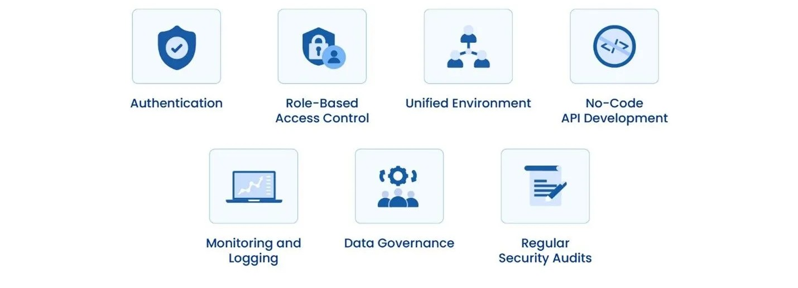

Definir los objetivos de la API. Antes de comenzar a desarrollar la API, es fundamental tener una comprensión clara de los problemas que intentará resolver y los usuarios a los que servirá.
Seguir estándares y convenciones. Es importante seguir los estándares de la industria al desarrollar una API web, como los principios de REST y el uso de JSON o XML.
Documentar la API de manera exhaustiva. La documentación clara y completa es esencial para que otros desarrolladores puedan entender cómo usarla correctamente. Herramientas como Swagger o Postman pueden ayudar en esto.
Priorizar la seguridad. Implementar autenticación y autorización para proteger la API de accesos no autorizados.
Versionar la API. Permite introducir cambios sin afectar a los usuarios existentes.

Proceso de Desarrollo de una Web API
Análisis de requerimientos: Identificar los requisitos funcionales y no funcionales de la API.
Planificación: Definir los objetivos del proyecto, asignar recursos y estimar tiempos y costos.
Diseño de la API: Definir endpoints, métodos HTTP, parámetros de solicitud y esquema de autenticación.
Implementación: Utilizar herramientas y frameworks adecuados, como Express.js para Node.js o Flask para Python.
Pruebas: Realizar pruebas unitarias y de integración.
Documentación: Crear documentación clara y detallada con ejemplos de uso y casos de error.
Despliegue: Implementar la API en un entorno de producción.
Monitoreo y mantenimiento: Establecer un sistema de monitoreo para detectar problemas y mantener la API eficiente y segura.
Comercialización (opcional): Publicar la API en mercados de APIs para monetización.
Mejores Prácticas en APIs
Usar nombres de endpoints descriptivos y consistentes.
Implementar paginación en consultas grandes para mejorar el rendimiento.
Usar códigos de estado HTTP adecuados para cada respuesta.
Proteger los endpoints con autenticación y autorización.